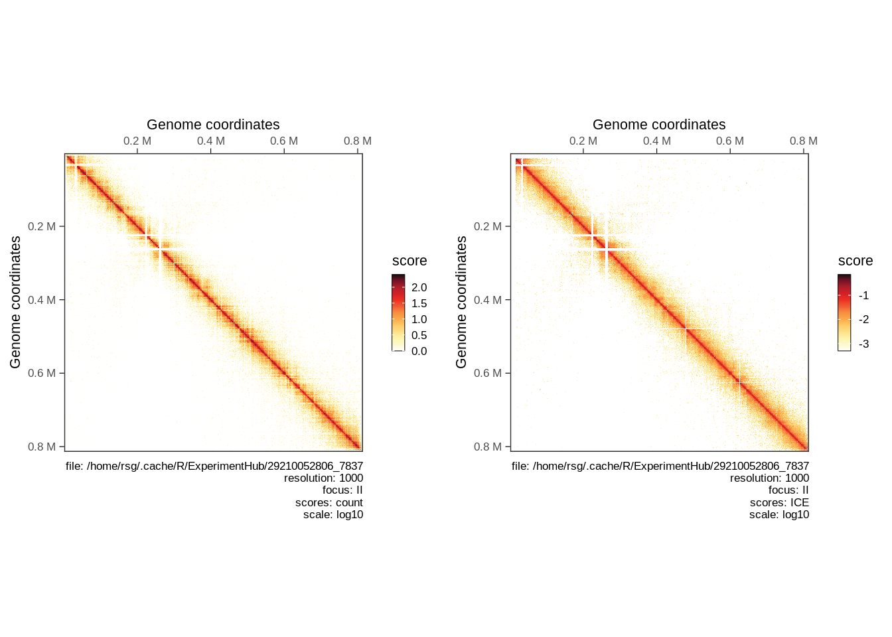

library(HiContactsData)
library(HiCExperiment)
library(HiContacts)
hicpro_matrix <- HiContactsData('yeast_wt', format = 'hicpro_matrix')
## see ?HiContactsData and browseVignettes('HiContactsData') for documentation
## loading from cache
hicpro_regions <- HiContactsData('yeast_wt', format = 'hicpro_bed')
## see ?HiContactsData and browseVignettes('HiContactsData') for documentation
## loading from cache
hicprof <- HicproFile(hicpro_matrix, bed = hicpro_regions)
hicpro <- import(hicprof)["II"]
plotMatrix(hicpro, use.scores = 'count')
hicpro <- normalize(hicpro)
cowplot::plot_grid(
plotMatrix(hicpro, use.scores = 'count'),
plotMatrix(hicpro, use.scores = 'ICE')
)